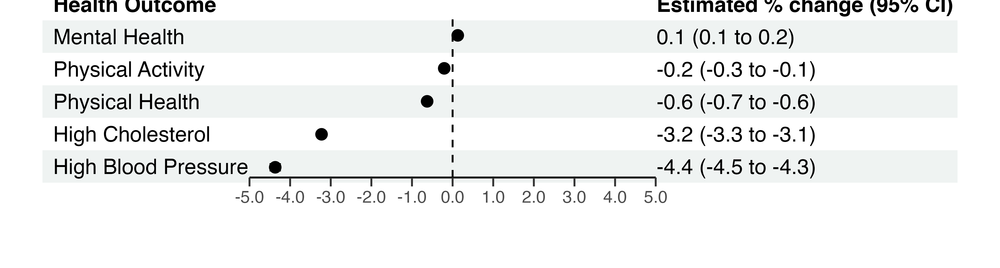

To ease interpretation, the walkability score was dichotomized according to cutoff values provided by EPA, where values above 10.5 are classified as “More Walkable”, and those below as “Less Walkable”.
dataset = read_csv("./data/merge_final.csv")## Rows: 1877910 Columns: 24
## ── Column specification ────────────────────────────────────────────────────────
## Delimiter: ","
## chr (19): fips, statefp, countyfp, tractce, csa_name, location_name, measure...
## dbl (5): blkgrpce, nat_walk_ind, lat, long, data_value
##
## ℹ Use `spec()` to retrieve the full column specification for this data.
## ℹ Specify the column types or set `show_col_types = FALSE` to quiet this message.regress_df = dataset %>%
pivot_wider(names_from = "race",
values_from = "percent_race") %>%
pivot_wider(names_from = "measure_id",
values_from = "data_value") %>%
janitor::clean_names() %>%
dplyr::select(tractce, nat_walk_ind, csa_name, lat, long, sex_male, sex_female, age_18plus, median_income, white, black, aian, asian, x2_plus, hispanic, highchol, mhlth, lpa, phlth, bphigh) %>%
mutate(
sex_male = as.numeric(sex_male)/100,
age_18plus = as.numeric(age_18plus)/100,
white = as.numeric(white)/100,
black = as.numeric(black)/100,
aian = as.numeric(aian)/100,
asian = as.numeric(asian)/100,
x2_plus = as.numeric(x2_plus)/100,
hispanic = as.numeric(hispanic)/100,
highchol = highchol/100,
mhlth = mhlth/100,
lpa = lpa/100,
phlth = phlth/100,
bphigh = bphigh/100,
median_income = as.numeric(median_income)
) %>%
group_by(tractce) %>%
summarize(
nat_walk_tract = nat_walk_ind,
sex_male = sex_male,
age_18plus = age_18plus,
white = white,
black = black,
aian = aian,
asian = asian,
x2_plus = x2_plus,
hispanic = hispanic,
highchol = highchol,
mhlth = mhlth,
lpa = lpa,
phlth = phlth,
bphigh = bphigh,
median_income = median_income,
lat = lat,
long = long
) %>%
dplyr::select(!c("lat", "long")) %>%
mutate(walkable = ifelse(nat_walk_tract<10.5, "Less Walkable", "More Walkable")) %>%
unique()## Warning in mask$eval_all_mutate(quo): NAs introduced by coercion
## Warning in mask$eval_all_mutate(quo): NAs introduced by coercion
## Warning in mask$eval_all_mutate(quo): NAs introduced by coercion
## Warning in mask$eval_all_mutate(quo): NAs introduced by coercion
## Warning in mask$eval_all_mutate(quo): NAs introduced by coercion
## Warning in mask$eval_all_mutate(quo): NAs introduced by coercion
## Warning in mask$eval_all_mutate(quo): NAs introduced by coercion
## Warning in mask$eval_all_mutate(quo): NAs introduced by coercion
## Warning in mask$eval_all_mutate(quo): NAs introduced by coercion## `summarise()` has grouped output by 'tractce'. You can override using the
## `.groups` argument.# mod <- gam(highchol ~ nat_walk_tract + sex_male + age_18plus + black + median_income + s(lat, long, bs="gp", m=2),
# family = betar(link='logit'),
# data = regress_df)
#
# summary(mod)
#
# residual1_plot =
# regress_df %>%
# add_predictions(mod) %>%
# add_residuals(mod) %>%
# ggplot(aes(x = nat_walk_tract, y = resid)) +
# geom_point(alpha = 0.3, size = 0.3) +
# geom_smooth(se = FALSE, method = "lm")
#
# residual1_plot
# mod_beta = betareg(mhlth ~ nat_walk_tract + sex_male + age_18plus + black, data = test)
#
# summary(mod_beta)
#
# residual_plot =
# test %>%
# add_predictions(mod_beta) %>%
# add_residuals(mod_beta) %>%
# ggplot(aes(x = nat_walk_tract, y = resid)) +
# geom_point(alpha = 0.3) +
# geom_smooth(se = FALSE, method = "lm")
#
# residual_plotWe utilized beta regression to model the relationship between health outcomes with the dichotomized walkability variable, controlling for sociodemographic variables of prevalence of age 18+, males, Black folks, and median income.
We chose this regression method as the outcome variable is in
proportions, and thus takes the form of a continuous value bounded
between 0 and 1. The R package betareg was used to
implement this method, while the betamfx command under the
mfx package was used to obtain the changes in marginal
probabilities on the outcome resulting from changes in the predictor. We
will report both numbers, however, we will be interpreting the marginal
probabilities for its more direct relevance to the real world.
# Beta regression model
chol = betareg(highchol ~ walkable + sex_male + age_18plus + black + median_income, data = regress_df) %>% broom::tidy(conf.int=TRUE)
mental = betareg(mhlth ~ walkable + sex_male + age_18plus + black + median_income, data = regress_df) %>% broom::tidy(conf.int=TRUE)
lpa = betareg(lpa ~ walkable + sex_male + age_18plus + black + median_income, data = regress_df) %>% broom::tidy(conf.int=TRUE)
physical = betareg(phlth ~ walkable + sex_male + age_18plus + black + median_income, data = regress_df) %>% broom::tidy(conf.int=TRUE)
bloodpres = betareg(bphigh ~ walkable + sex_male + age_18plus + black + median_income, data = regress_df) %>% broom::tidy(conf.int=TRUE)
# Margins
chol_margin = betamfx(highchol ~ walkable + sex_male + age_18plus + black + median_income, data = regress_df) %>% broom::tidy(conf.int=TRUE)
mental_margin = betamfx(mhlth ~ walkable + sex_male + age_18plus + black + median_income, data = regress_df) %>% broom::tidy(conf.int=TRUE)
lpa_margin = betamfx(lpa ~ walkable + sex_male + age_18plus + black + median_income, data = regress_df) %>% broom::tidy(conf.int=TRUE)
physical_margin = betamfx(phlth ~ walkable + sex_male + age_18plus + black + median_income, data = regress_df) %>% broom::tidy(conf.int=TRUE)
bloodpres_margin = betamfx(bphigh ~ walkable + sex_male + age_18plus + black + median_income, data = regress_df) %>% broom::tidy(conf.int=TRUE)
# Collate estimates into one data frame
modeldata =
chol %>%
filter(grepl('walk', term)) %>%
rbind(mental[2,]) %>%
rbind(lpa[2,]) %>%
rbind(physical[2,]) %>%
rbind(bloodpres[2,]) %>%
mutate(
outcome = c("High Cholesterol", "Mental Health", "Physical Activity", "Physical Health", "High Blood Pressure"),
OR = exp(estimate),
lowlim = exp(conf.low),
highlim = exp(conf.high)
) %>%
dplyr::select(outcome, OR, lowlim, highlim, p.value) %>%
arrange(desc(OR)) %>%
knitr::kable(digits = 3, col.names = c('Outcome', 'Coefficient', 'CI (lower)', 'CI (upper)', 'p-value'))
marginsdata =
chol_margin %>%
filter(grepl('walk', term)) %>%
rbind(mental_margin[1,]) %>%
rbind(lpa_margin[1,]) %>%
rbind(physical_margin[1,]) %>%
rbind(bloodpres_margin[1,]) %>%
mutate(
outcome = c("High Cholesterol", "Mental Health", "Physical Activity", "Physical Health", "High Blood Pressure"),
pct = estimate*100,
pct.conf.low = conf.low*100,
pct.conf.high = conf.high*100
) %>%
dplyr::select(outcome, pct, pct.conf.low, pct.conf.high, p.value) %>%
arrange(desc(pct)) %>%
knitr::kable(digits = 3, col.names = c('Outcome', '% change', 'CI (lower)', 'CI (upper)', 'p-value'))| Term | Coefficient | p-value | CI (lower) | CI (high) |
|---|---|---|---|---|
| (Intercept) | -1.058 | 0 | -1.084 | -1.033 |
| walkableMore Walkable | 0.010 | 0 | 0.007 | 0.013 |
| sex_male | 0.354 | 0 | 0.317 | 0.391 |
| age_18plus | -0.740 | 0 | -0.764 | -0.716 |
| black | 0.115 | 0 | 0.108 | 0.123 |
| median_income | 0.000 | 0 | 0.000 | 0.000 |
| (phi) | 372.799 | 0 | 367.211 | 378.387 |
| Term | Coefficient | p-value | CI (lower) | CI (high) |
|---|---|---|---|---|
| (Intercept) | -0.895 | 0.000 | -0.929 | -0.861 |
| walkableMore Walkable | -0.067 | 0.000 | -0.071 | -0.062 |
| sex_male | 0.070 | 0.004 | 0.023 | 0.118 |
| age_18plus | -0.941 | 0.000 | -0.973 | -0.909 |
| black | 0.119 | 0.000 | 0.110 | 0.129 |
| median_income | 0.000 | 0.000 | 0.000 | 0.000 |
| (phi) | 273.871 | 0.000 | 269.731 | 278.012 |
| Term | Coefficient | p-value | CI (lower) | CI (high) |
|---|---|---|---|---|
| (Intercept) | 0.262 | 0 | 0.221 | 0.303 |
| walkableMore Walkable | -0.011 | 0 | -0.016 | -0.006 |
| sex_male | 0.375 | 0 | 0.317 | 0.434 |
| age_18plus | -1.301 | 0 | -1.340 | -1.263 |
| black | 0.383 | 0 | 0.372 | 0.395 |
| median_income | 0.000 | 0 | 0.000 | 0.000 |
| (phi) | 97.786 | 0 | 96.317 | 99.254 |
| Term | Coefficient | p-value | CI (lower) | CI (high) |
|---|---|---|---|---|
| (Intercept) | -0.356 | 0.000 | -0.392 | -0.320 |
| walkableMore Walkable | -0.149 | 0.000 | -0.153 | -0.144 |
| sex_male | -0.632 | 0.000 | -0.682 | -0.582 |
| age_18plus | 0.050 | 0.003 | 0.017 | 0.083 |
| black | -0.073 | 0.000 | -0.084 | -0.063 |
| median_income | 0.000 | 0.000 | 0.000 | 0.000 |
| (phi) | 123.725 | 0.000 | 121.832 | 125.617 |
| Term | Coefficient | p-value | CI (lower) | CI (high) |
|---|---|---|---|---|
| (Intercept) | -0.188 | 0.000 | -0.232 | -0.145 |
| walkableMore Walkable | -0.199 | 0.000 | -0.205 | -0.194 |
| sex_male | -0.522 | 0.000 | -0.584 | -0.459 |
| age_18plus | -0.015 | 0.466 | -0.056 | 0.026 |
| black | 0.574 | 0.000 | 0.561 | 0.586 |
| median_income | 0.000 | 0.000 | 0.000 | 0.000 |
| (phi) | 77.959 | 0.000 | 76.773 | 79.145 |
By exponentiating the regression coefficient, we obtained the odds ratios for the association between health outcomes and walkability below. However, they are not at all straightforward to interpret, as they correspond to the odds of change in proportion of a selected health outcome, controlling for sociodemographic variables.
| Outcome | Coefficient | CI (lower) | CI (upper) | p-value |
|---|---|---|---|---|
| Mental Health | 1.010 | 1.007 | 1.013 | 0 |
| Physical Activity | 0.989 | 0.984 | 0.994 | 0 |
| Physical Health | 0.936 | 0.932 | 0.940 | 0 |
| High Cholesterol | 0.862 | 0.858 | 0.866 | 0 |
| High Blood Pressure | 0.819 | 0.815 | 0.824 | 0 |
It is easier to convert the regression results into changes in marginal probabilities of the outcome variable:
| Outcome | % change | CI (lower) | CI (upper) | p-value |
|---|---|---|---|---|
| Mental Health | 0.127 | 0.087 | 0.167 | 0 |
| Physical Activity | -0.206 | -0.300 | -0.112 | 0 |
| Physical Health | -0.627 | -0.667 | -0.587 | 0 |
| High Cholesterol | -3.226 | -3.319 | -3.134 | 0 |
| High Blood Pressure | -4.367 | -4.484 | -4.250 | 0 |
Here, we see that more walkable places have the following change in prevalence for a health outcome compared to less walkable places:
Therefore, increase in walkability is associated with decreased prevalence of poor health outcomes, which is expected. However, an increase in walkability is associated with an increase for prevalence of poor mental health, but this could be due to unaccounted for confounding from density of space and urbanicity that comes with more walkable spaces.
Below, we create a forest plot to more visually display the difference in prevalence for our various health outcomes compared to less walkable places:
devtools::install_github("rdboyes/forester")## Skipping install of 'forester' from a github remote, the SHA1 (a9ad7c45) has not changed since last install.
## Use `force = TRUE` to force installationlibrary(grid)
library(forester)forestplot_df =
chol_margin %>%
filter(grepl('walk', term)) %>%
rbind(mental_margin[1,]) %>%
rbind(lpa_margin[1,]) %>%
rbind(physical_margin[1,]) %>%
rbind(bloodpres_margin[1,]) %>%
mutate(
outcome = c("High Cholesterol", "Mental Health", "Physical Activity", "Physical Health", "High Blood Pressure"),
pct = estimate*100,
pct.conf.low = conf.low*100,
pct.conf.high = conf.high*100
) %>%
dplyr::select(outcome, pct, pct.conf.low, pct.conf.high, p.value) %>%
arrange(desc(pct)) %>%
janitor::clean_names() %>%
rename("Health Outcome" = outcome )
forestplot_df## # A tibble: 5 × 5
## `Health Outcome` pct pct_conf_low pct_conf_high p_value
## <chr> <dbl> <dbl> <dbl> <dbl>
## 1 Mental Health 0.127 0.0869 0.167 4.66e- 10
## 2 Physical Activity -0.206 -0.300 -0.112 1.75e- 5
## 3 Physical Health -0.627 -0.667 -0.587 6.51e-209
## 4 High Cholesterol -3.23 -3.32 -3.13 0
## 5 High Blood Pressure -4.37 -4.48 -4.25 0forest_plot =
forester(left_side_data = forestplot_df["Health Outcome"],
estimate = forestplot_df$pct,
ci_low = forestplot_df$pct_conf_low,
ci_high = forestplot_df$pct_conf_high,
xlim = c(-5, 5),
estimate_col_name = "Estimated % change (95% CI)",
font_family = "sans",
display = FALSE,
null_line_at = 0,
xbreaks = c(-5, -4, -3, -2, -1, 0, 1, 2, 3, 4, 5),
file_path = here::here("./images/forest_plot.png"))